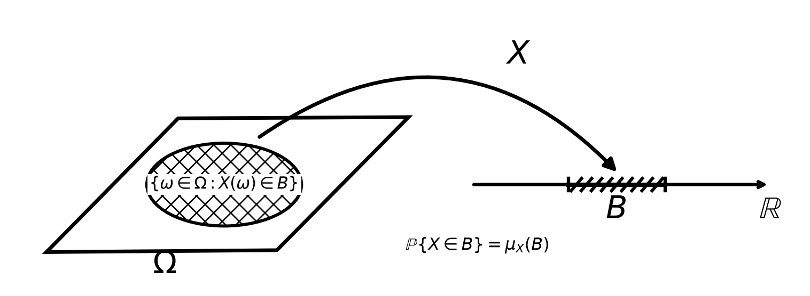

The linear-algebra part gave us the language of vectors, maps, and projections. Probability adds a second ingredient that finance cannot do without: uncertainty. A return, a payoff, a price tomorrow — none is a fixed number; each is a random quantity, known only through the range of values it might take and how likely each is. This part builds the machinery for reasoning about such quantities, from the ground up.
5.1 Probability spaces
For completeness, we start with the formal definition of a probability space. However, we will not spend much time on measure-theoretic details; the intuition is what matters. In the future, we will mainly work with random variables and their distributions, which are the objects of interest in finance.
Definition 5.1 A probability space is a triple \((\Omega, \mathcal{F}, \mathbb{P})\):
the sample space\(\Omega\) is the set of all possible outcomes \(\omega\);
the event space\(\mathcal{F}\) is a collection of subsets of \(\Omega\), called events, to which we can assign probabilities;
the probability measure\(\mathbb{P}\) assigns to each event \(A \in \mathcal{F}\) a number \(\mathbb{P}(A) \in [0,1]\), subject to the axioms below.
Definition 5.2 A probability measure\(\mathbb{P}\) satisfies the three axioms of Kolmogorov:
nonnegativity: \(\mathbb{P}(A) \ge 0\) for every event \(A \in \mathcal{F}\);
normalization: \(\mathbb{P}(\Omega) = 1\);
countable additivity: if \(A_1, A_2, \dots\) are pairwise disjoint events, then \(\mathbb{P}\!\left(\bigcup_i A_i\right) = \sum_i \mathbb{P}(A_i)\).
You might be very confused if you know some probability theory but first time exposure to measure. One thing keep in mind is that \(\Omega\) is a set of real-world subjects not abstract numbers. For example,
\(\Omega = \{\text{heads}, \text{tails}\}\),
\(\Omega = \{\text{default}, \text{survival}\}\),
\(\Omega = \{\text{up}, \text{down}\}\),
\(\Omega = \{\text{rain}, \text{snow}, \text{sun}\}\), etc.
Then what is \(\mathcal{F}\)? It is a collection of subsets of \(\Omega\). For example,
If \(\Omega = \{\text{heads}, \text{tails}\}\), then \(\mathcal{F} = \{\varnothing, \{\text{heads}\}, \{\text{tails}\}, \Omega\}\), meaning nothing happened, heads happens, tails happens, or either happens. Formally,
Definition 5.3 A \(\sigma\)-algebra on a set \(\Omega\) is a collection \(\mathcal{F}\) of subsets of \(\Omega\) that is closed under the usual set operations needed in probability and measure theory:
\(\Omega \in \mathcal{F}\).
If \(A \in \mathcal{F}\), then \(A^c \in \mathcal{F}\).
If \(A_1, A_2, \dots \in \mathcal{F}\), then \(\bigcup_{i=1}^\infty A_i \in \mathcal{F}\).
This definition tells us that for a set \(\Omega\), there are many possible \(\mathcal{F}\). Let’s see the following example. If \(\Omega = \{\text{rain}, \text{snow}, \text{sun}\}\), both of the following are valid \(\sigma\)-algebras:
\[
\begin{aligned}
\mathcal{F}_1 &= \{\varnothing, \{\text{rain}\}, \{\text{snow}\}, \{\text{sun}\}, \{\text{rain},\text{snow}\}, \{\text{rain},\text{sun}\}, \{\text{snow},\text{sun}\}, \Omega\} \\
\mathcal{F}_2 &= \{\varnothing, \{\text{rain}\}, \{\text{snow},\text{sun}\}, \Omega\}
\end{aligned}
\]\(\mathcal{F}_1\) is the largest possible \(\sigma\)-algebra on \(\Omega\), since it contains all subsets of \(\Omega\). However, \(\mathcal{F}_2\) is also a valid \(\sigma\)-algebra. Firstly, the \(\emptyset\) and \(\Omega\) are in \(\mathcal{F}_2\). Secondly, the complement of \(\{\text{rain}\}\) is \(\{\text{snow},\text{sun}\}\), which is also in \(\mathcal{F}_2\). Finally, the union of any two sets in \(\mathcal{F}_2\) is also in \(\mathcal{F}_2\).
We will not explore the technical details; the intuition is that \(\mathcal{F}\) is the collection of events whose occurrence we can determine from the information available. In the above examples, larger \(\mathcal{F}\) means more information, and smaller \(\mathcal{F}\) means less information (Note that larger/smaller is defined “\(\subset\)” or “\(\supset\)”).
Lastly, \(\mathbb{P}\) is a function that assigns a probability to each event in \(\mathcal{F}\). For example, if \(\Omega = \{\text{rain}, \text{snow}, \text{sun}\}\), we might have \(\mathbb{P}(\{\text{rain}\}) = 0.3\), \(\mathbb{P}(\{\text{snow}\}) = 0.3\), \(\mathbb{P}(\{\text{sun}\}) = 0.4\).
Everything else follows from the three axioms. The complement rule \(\mathbb{P}(A^c) = 1 - \mathbb{P}(A)\) comes from applying additivity to \(A\) and \(A^c\); monotonicity (\(A \subseteq B \Rightarrow \mathbb{P}(A) \le \mathbb{P}(B)\)) and the inclusion–exclusion formula \[
\mathbb{P}(A \cup B) = \mathbb{P}(A) + \mathbb{P}(B) - \mathbb{P}(A \cap B)
\] follow the same way.
Conditioning, Bayes, and independence
New information reshapes probabilities. If we learn that event \(B\) has occurred, the world shrinks to \(B\), and we renormalize. Therefore, we have the following definition of conditional probability.
Definition 5.4 For events \(A, B\) with \(\mathbb{P}(B) > 0\), the conditional probability of \(A\) given \(B\) is \[
\mathbb{P}(A \mid B) = \frac{\mathbb{P}(A \cap B)}{\mathbb{P}(B)} .
\]
Rearranging gives the multiplication rule \(\mathbb{P}(A \cap B) = \mathbb{P}(A \mid B)\,\mathbb{P}(B)\). Chaining it in both orders — \(\mathbb{P}(A \cap B) = \mathbb{P}(A \mid B)\mathbb{P}(B) = \mathbb{P}(B \mid A)\mathbb{P}(A)\) — and solving yields the rule that lets us invert a conditional.
Theorem 5.1 (Bayes’ rule) For events \(A, B\) with positive probability, \[
\mathbb{P}(A \mid B) = \frac{\mathbb{P}(B \mid A)\,\mathbb{P}(A)}{\mathbb{P}(B)} .
\] If \(A_1, \dots, A_k\) partition \(\Omega\), the denominator expands by the law of total probability, \(\mathbb{P}(B) = \sum_j \mathbb{P}(B \mid A_j)\mathbb{P}(A_j)\).
Bayes’ rule is the engine of learning from data: \(\mathbb{P}(A)\) is a prior belief, \(\mathbb{P}(B \mid A)\) is the likelihood of the evidence, and \(\mathbb{P}(A \mid B)\) is the posterior. We will meet it again as the backbone of Bayesian inference in the statistics part.
Definition 5.5 Events \(A\) and \(B\) are independent if \[
\mathbb{P}(A \cap B) = \mathbb{P}(A)\,\mathbb{P}(B),
\] equivalently \(\mathbb{P}(A \mid B) = \mathbb{P}(A)\) when \(\mathbb{P}(B)>0\): knowing \(B\) tells us nothing about \(A\).
5.2 Random variables
We rarely care about raw outcomes; we care about numbers read off them — a payoff, a return, a loss. A random variable is such a reading: a function \(X : \Omega \to \mathbb{R}\) that turns each state of the world \(\omega\) into a number \(X(\omega)\). For example, if \(\Omega = \{\text{default}, \text{survival}\}\), we might have \(X(\text{default}) = 1\) and \(X(\text{survival}) = 0\), so \(X\) is the indicator of default. But not every function will do. We want to be able to ask questions like “what is the probability that \(X\) falls in the interval \((a,b)\)?” and have a well-defined answer. By looking at the question, you can already see that if we ask the probability falling in \((a,b)\), we also need to ask the probability falling in \((-\infty, a]\) and \([b, \infty)\), and so on. This intuition guides us to a \(\sigma\)-algebra of subsets of \(\mathbb{R}\). In other words, for every such set \(B\) of values, the pre-image \(X^{-1}(B) = \{\omega : X(\omega) \in B\}\) should be an event in \(\mathcal{F}\), so that \(\mathbb{P}\) can assign it a probability. On the outcome side we had \(\mathcal{F}\), a \(\sigma\)-algebra of events. On the value side \(\mathbb{R}\) we need a matching collection of “reasonable” subsets — the sets of values we could conceivably want a probability for. We now formally define that collection, the Borel \(\sigma\)-algebra.
Definition 5.6 The Borel \(\sigma\)-algebra\(\mathcal{B}(\mathbb{R})\) is the smallest \(\sigma\)-algebra on \(\mathbb{R}\) that contains every open interval \((a,b)\). Its members are the Borel sets.
We do not discuss the property of Borel sets in detail, but just keep the intuition in mind that the Borel \(\sigma\)-algebra is the collection of all sets that can be formed from open intervals by taking complements and countable unions. It is the “reasonable” collection of subsets of \(\mathbb{R}\) for which we can assign probabilities.
We can now say exactly which functions qualify.
Definition 5.7 Let \((\Omega,\mathcal F,\mathbb P)\) be a probability space. A random variable is a function \(X:\Omega\to\mathbb R\) such that, for every Borel set \(B\in\mathcal B(\mathbb R)\), \(\{\omega\in\Omega:X(\omega)\in B\}\in\mathcal F\).
The probability that \(X\) takes on a value in a Borel set \(B\) is written as \[
\mathbb{P} (X\in B)=\mathbb{P} (\{\omega \in \Omega \mid X(\omega )\in B\}).
\]
Code
import numpy as npimport matplotlib.pyplot as pltfrom matplotlib.patches import Polygon, Ellipse, FancyArrowPatch# Canvasfig, ax = plt.subplots(figsize=(8, 3))ax.set_xlim(0, 12)ax.set_ylim(0, 4.5)ax.axis("off")# Sample space Omega: a slanted parallelogramomega = Polygon( [(0.55, 0.55), (4.05, 0.58), (6.05, 2.75), (2.55, 2.73)], closed=True, fill=False, edgecolor="black", linewidth=2.6, joinstyle="miter",)ax.add_patch(omega)# Event {X in B}event = Ellipse( (3.25, 1.65), width=2.35, height=1.35, facecolor="white", edgecolor="black", linewidth=2.2, hatch="xx",)ax.add_patch(event)ax.text(3.25, 1.65, r"$\{\omega\in\Omega:X(\omega)\in B\}$", ha="center", va="center", fontsize=11.5, bbox=dict(facecolor="white", edgecolor="none", pad=1.5))# Label Omegaax.text(2.35, 0.20, r"$\Omega$", fontsize=22, ha="center")# Mapping arrow Xmapping = FancyArrowPatch( posA=(3.75, 2.40), posB=(9.25, 1.82), arrowstyle="-|>", mutation_scale=18, linewidth=2.6, color="black", connectionstyle="arc3,rad=-0.43",)ax.add_patch(mapping)ax.text(7.55, 3.62, r"$X$", fontsize=23)# Real lineax.annotate("", xy=(11.55, 1.65), xytext=(7.00, 1.65), arrowprops=dict(arrowstyle="->", linewidth=2.4, color="black"),)# Interval B on Rx_left, x_right =8.48, 9.95ax.plot([x_left, x_right], [1.65, 1.65], linewidth=3.0, color="black")# Endpoint tickstick_h =0.10for x in (x_left, x_right): ax.plot([x, x], [1.65- tick_h, 1.65+ tick_h], linewidth=2.4, color="black")# Diagonal hatch marks along Bfor x in np.linspace(x_left +0.12, x_right -0.12, 9): ax.plot([x -0.08, x +0.08], [1.55, 1.75], linewidth=2.2, color="black")ax.text((x_left + x_right) /2, 1.10, r"$B$", fontsize=22, ha="center")ax.text(11.38, 1.10, r"$\mathbb{R}$", fontsize=22, ha="left")# Probability statementax.text(7.10, 0.58,r"$\mathbb{P}\{X\in B\}=\mu_X(B)$", fontsize=12, ha="center",)plt.tight_layout()

Sometimes, you would also see people use the word “\(\mathcal{F}\)-measurable” to describe a random variable. The following definition formalizes that.
Definition 5.8 Let \(X: \Omega \to \mathbb{R}\) be a function, and let \(\mathcal{F}\) be a \(\sigma\)-algebra on \(\Omega\). The \(\sigma\)-algebra generated by \(X\) is \[
\sigma(X) = \{X^{-1}(B) : B \in \mathcal{B}(\mathbb{R})\}.
\] We say that \(X\) is \(\mathcal{F}\)-measurable if \[
\sigma(X)\subseteq\mathcal{F}.
\]
In plain English, a random variable is \(\mathcal{F}\)-measurable if the preimage of every Borel set under \(X\) is an event in \(\mathcal{F}\). Conversely, if \(X^{-1}(B)\) is not in \(\mathcal{F}\) for some Borel set \(B\), then \(X\) is not \(\mathcal{F}\)-measurable.
For example, if \(\Omega = \{\text{rain}, \text{snow}, \text{sun}\}\) and \(\mathcal{F} = \{\varnothing, \{\text{rain}\}, \{\text{snow},\text{sun}\}, \Omega\}\), then the function \(X\) defined by \[
X(\text{rain}) = 1, \quad X(\text{snow}) = 2, \quad X(\text{sun}) = 3
\] then \(X\) is not \(\mathcal{F}\)-measurable, because the preimage of the Borel set \[
X^{-1}(\{2\}) = \{\text{snow}\} \not\in \mathcal{F}.
\] However, if we define \(Y\) by \[
Y(\text{rain}) = 1, \quad Y(\text{snow}) = 0, \quad Y(\text{sun}) = 0
\] then \(Y\) is \(\mathcal{F}\)-measurable. Indeed, \(Y\) takes only the values \(0\) and \(1\), and \[
Y^{-1}(\{1\}) = \{\text{rain}\} \in \mathcal{F}, \qquad Y^{-1}(\{0\}) = \{\text{snow}, \text{sun}\} \in \mathcal{F},
\] so the pre-image of any Borel set is one of \(\varnothing, \{\text{rain}\}, \{\text{snow},\text{sun}\}, \Omega\), all of which lie in \(\mathcal{F}\). Intuitively, \(Y\) can be evaluated from the coarse information in \(\mathcal{F}\) — it asks only whether it rains — whereas \(X\), which distinguishes snow from sun, cannot.
5.3 The distribution of a random variable
A random variable carries the probability measure \(\mathbb{P}\) from the abstract space \(\Omega\) over to the concrete number line, where we can actually compute. Measurability is exactly what makes that transfer well-defined: because \(X^{-1}(B)\) is always an event, the following assignment always makes sense.
Definition 5.9 Let \(X\) be a random variable on a probability space \((\Omega, \mathcal{F}, \mathbb{P})\). The distribution measure of \(X\) is the probability measure \(\mu_X\) that assigns to each Borel subset \(B\) of \(\mathbb{R}\) the mass\[
\mu_X(B) = \mathbb{P}(X \in B).
\]
Let’s take a look at the following example.
Example 5.1 Let \(\Omega = [0,1]\), \(\mathcal{F} = \mathcal{B}([0,1])\), the probability measure \(\mathbb{P}\) defined by the formula \(\mathbb{P}([a, b]) = b - a\) (uniform measure). We define the random variable \(X\) by \(X(\omega) = \omega^2\). Then the mass \(\mu_X\) of \(X\) is given by \[
\mu_X([a, b]) = \mathbb{P}(X \in [a, b]) = \mathbb{P}(\{\omega: a < \omega^2 < b\}) = \mathbb{P}([\sqrt{a}, \sqrt{b}]) = \sqrt{b} - \sqrt{a}.
\] Thus, even though \(\omega\) is uniformly distributed on \([0,1]\), the random variable \(X=\omega^2\) is not uniformly distributed. It places relatively more probability on values near zero. Now suppose that we define another probability measure \(\tilde{\mathbb{P}}\) on \(\Omega\) by \(\tilde{\mathbb{P}}([a, b]) = (b^2 - a^2)\). Then the mass \(\tilde{\mu}_X\) of \(X\) is given by \[
\tilde{\mu}_X([a, b]) = \tilde{\mathbb{P}}(X \in [a, b]) = \tilde{\mathbb{P}}(\{\omega: a < \omega^2 < b\}) = \tilde{\mathbb{P}}([\sqrt{a}, \sqrt{b}]) = b - a.
\] Consequently, \(X\) is uniformly distributed on [0,1] under \(\tilde{\mathbb{P}}\). The function \(X(\omega)=\omega^2\) has not changed. What has changed is the probability assigned to the different states \(\omega \in \Omega\). Under \(\tilde{\mathbb{P}}\), larger values of \(\omega\) receive more probability than they do under \(\mathbb{P}\). This reweighting exactly offsets the effect of the transformation \(X(\omega)=\omega^2\).
The above intuitive example illustrates the core idea of change of measure, which is a fundamental concept in financial mathematics. In the future, we will see that the risk-neutral measure is a reweighting of the real-world measure that prices every asset as if it is risk-free.
Another way to describe the law of a random variable is through its cumulative distribution function (CDF), which is the running total of probability up to each point.
Definition 5.10 The cumulative distribution function (CDF) of \(X\) is \[
F_X(x) = \mu_X((-\infty, x]) = \mathbb{P}(X \le x), \qquad x \in \mathbb{R} .
\] It is nondecreasing, right-continuous, with \(F_X(-\infty) = 0\) and \(F_X(+\infty) = 1\).
Definition 5.11
\(X\) is discrete if its distribution is concentrated on a countable set of values \(\{x_1, x_2, \dots\}\), each carrying positive mass. The probability mass function (PMF) records that mass, \[
p_X(x) = \mu_X(\{x\}) = \mathbb{P}(X = x), \qquad \sum_i p_X(x_i) = 1,
\]
\(X\) is continuous if its distribution has no atoms and can be written as an integral of a probability density function (PDF) \(f_X \ge 0\), \[
\mu_X(B) = \int_B f_X(t)\, dt, \qquad \int_{-\infty}^\infty f_X(t)\, dt = 1,
\] so in particular \(F_X(x) = \int_{-\infty}^x f_X(t)\, dt\).
The two cases differ in where probability sits. For a discrete variable it piles up as mass on isolated points, \(\mathbb{P}(X = x_i) = p_X(x_i) > 0\). For a continuous variable it is smeared out as area under the density, \(\mathbb{P}(a \le X \le b) = \int_a^b f_X(t)\, dt\), and every single point has probability zero, \(\mathbb{P}(X = x) = 0\) — so the density \(f_X(x)\) is a rate of probability per unit length, not a probability, and may exceed \(1\). In both cases the PMF/PDF and the CDF are two views of the same mass \(\mu_X\): the CDF is the running total of the PMF/PDF, and the PMF/PDF the jump/derivative of the CDF.